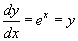
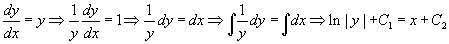
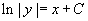
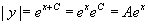
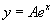

This device cannot display Java animations. The above is a substitute static image
The applet shows the slope field for dy/dx = y. The solution appears to be an exponential function.
In fact, if we guess that y = ex and plug that in, we find that it works I.E:

We can be more methodical by using a technique called
separation of variables. You start with the differential equation and use algebra to move the
y's to the left-hand side and the
x's to the right-hand side. You also treat
dy and
dx as if they were objects and move them, using algebra, to the appropriate sides. Then integrate both sides and simplify. For this example, it looks like

In the first step, we divide both sides by
y, then multiply both sides by
dx. Integrating both sides by their respective variables yields the result.
Note that, since both C's are just arbitrary constants, we can subtract either one of them from both sides and then combine them into a new arbitrary constant to get

Exponentiating both sides gives

where we converted
eC to a new arbitrary constant
A>0. Getting rid of the absolute value just allows
A to also be negative. Can
A be 0? We need to check this case, because when we initially divided by
y on both sides, we might have lost the solution
y = 0. In fact, this is a solution, so we wind up with

as the family of solutions for this differential equation, where
A can be any real number.
Separation of variables only works if we can move the y's to the left-hand side using multiplication or division, not addition or subtraction. So something like dy/dx = x + y is not separable, but dy/dx = y + xy is separable, because we can factor the y out of the terms on the right-hand side, then divide both sides by y.
An equation like dy/dx = (x + 3)/(y - 2) is also separable, because we can multiply both sides by (y - 2); it is ok to move constants to either side. Your calculus textbook may have other examples of separable differential equations that you can type in to this applet and see what the graph looks like (remembering that if the solution isn't a function of x, the graphing algorithm may mess up).
Other 'Differential Equations' topics
(C) 2011 Copyright Math Open Reference.
All rights reserved